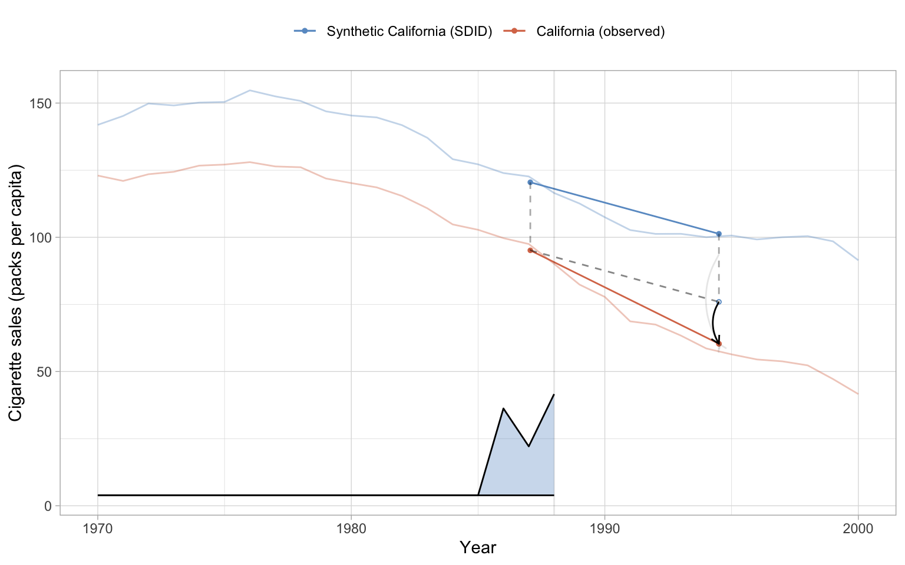
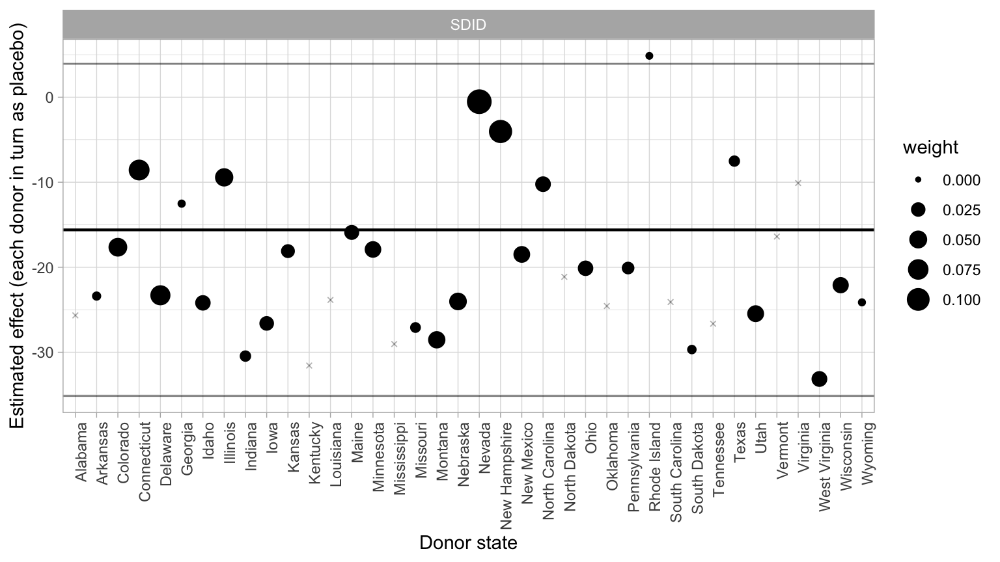
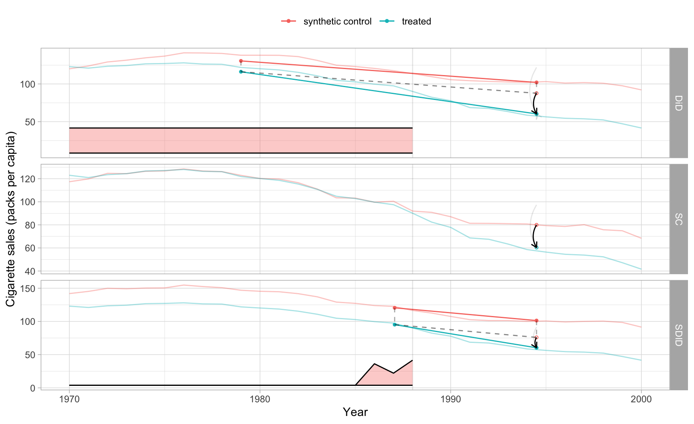
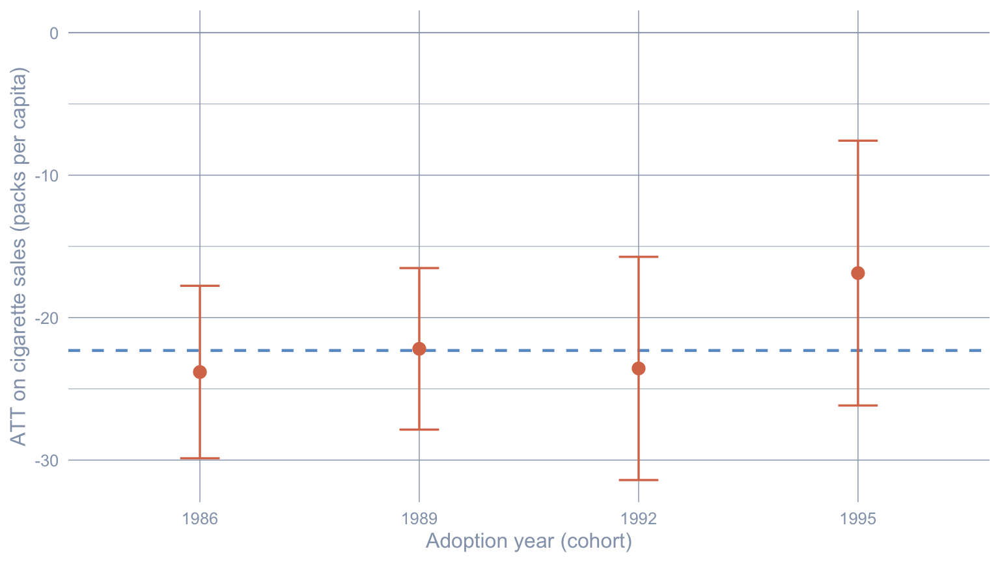

flowchart LR
A["Panel Y, treated unit + donors"] --> B["Unit weights omega<br/>(simplex; match treated pre-period)"]
A --> C["Time weights nu<br/>(simplex; match donors' post-period)"]
B --> D["Doubly-weighted DiD<br/>tau_SDID"]
C --> D
D --> E["ATT = Y1t - Y1t-hat(0)"]
style A fill:#6a9bcc,stroke:#cbd5e0,color:#fff
style D fill:#6a9bcc,stroke:#cbd5e0,color:#fff
style E fill:#d97757,stroke:#cbd5e0,color:#fff
6 Synthetic Difference-in-Differences
Chapter 5 closed the gap between observed and synthetic counterfactual by adding a model: ridge regression supplied a bias correction the simplex weights could not. Synthetic Difference-in-Differences (SDID) of Arkhangelsky et al. (2021) closes the same gap without an outcome model. It keeps the synthetic-control unit weights \(\omega_i\), but it also lets the data choose time weights \(\nu_t\) — pre-period years similar to the post-period get more weight; volatile years near the cutoff get less — and then runs an ordinary two-way fixed-effects DiD on the doubly-reweighted panel. The unit weights handle baseline level gaps the way SCM does; the time weights handle local pre-trend shocks the way no single-vintage DiD ever could.
This chapter does three demonstrations on the same Proposition 99 panel that chapter 4 used (the canonical Arkhangelsky-et-al-2021 Table 1 replication), plus a fourth pass on the simulated tobacco panel from chapter 5 so we can see how SDID handles staggered adoption. Throughout, we use \(\omega\) for SDID unit weights and \(\nu\) for SDID time weights to avoid the symbol clash with chapter 5’s ridge penalty \(\lambda\) and chapter 11’s factor loadings \(\lambda_i\).
6.1 Learning objectives
- Build the SDID counterfactual on Proposition 99 with
synthdid::panel.matrices()andsynthdid_estimate()and recover the iconic Arkhangelsky-et-al-2021 Table 1 side-by-side of DiD, SC, and SDID. The disagreement between the three estimates is the chapter’s lesson — it isolates exactly how much of the ATT each set of weights buys you. - Adjust the SDID fit for time-varying covariates with
xsynthdid::adjust.outcome.for.x(), which residualises the outcome on a covariate path before SDID weights are computed. This is the only piece of covariate machinery the SDID world ships, and it works in a single line. - Match the inference method to the design: placebo standard errors are the only valid frequentist choice whenever a fit has a single treated unit — which includes each cohort of a staggered roll-out, since SDID is fitted one treated unit at a time, so jackknife and bootstrap collapse there too.
- Extend SDID to staggered adoption by fitting one synthdid per cohort and aggregating with the cell-count weights \(\pi_g\) from Clarke et al. (2023). This is the SDID analogue of
multisynthfrom chapter 5 — same staggered problem, different counterfactual.
6.2 The SDID idea
Three estimators on the same panel. DiD uses uniform unit and time weights and assumes parallel trends between donors and the treated unit. SCM keeps uniform time weights but lets the donor weights \(\omega_i\) vary across the simplex to match the treated pre-period. SDID lets both sets of weights vary across the simplex — donors that look like California get \(\omega_i > 0\), and pre-period years that look like the post-period get \(\nu_t > 0\). Then SDID fits an ordinary DiD on the doubly de-meaned panel. The double reweighting buys two things at once: it relaxes parallel trends (because the time weights align the donors’ pre-period trajectory with the treated unit’s), and it tolerates a vertical baseline level gap between the treated unit and its synthetic match (because the DiD step absorbs that level shift).
Identification. SDID identifies the ATT under a latent-factor model in which the doubly-reweighted donors track the doubly-reweighted treated unit in expectation. This is strictly weaker than DiD’s parallel-trends assumption (which SDID nests at \(\omega_i = 1/N_0\), \(\nu_t = 1/T_{\text{pre}}\)) and strictly weaker than SCM’s exact-pre-period-match condition (which SDID nests at \(\nu_t = 1/T_{\text{pre}}\)). The full statement and asymptotic theory are in Theorem 1 of Arkhangelsky et al. (2021).
6.3 The estimator
SDID estimates the ATT by minimising the doubly-weighted two-way-fixed-effects sum of squares:
\[ \big(\widehat{\tau}_{\text{SDID}}, \widehat{\mu}, \widehat{\alpha}, \widehat{\beta}\big) \;=\; \arg\min_{\tau, \mu, \alpha, \beta} \sum_{i=1}^{N}\sum_{t=1}^{T} \Big(Y_{it} - \mu - \alpha_i - \beta_t - \tau\, D_{it}\Big)^2\, \widehat{\omega}_i\, \widehat{\nu}_t, \]
where \(\alpha_i\) are unit fixed effects, \(\beta_t\) are time fixed effects, and \(D_{it}\) is the treatment dummy. The weights \(\widehat{\omega}_i\) and \(\widehat{\nu}_t\) are themselves estimated by ridge-regularised simplex problems that solve for them before \(\tau\) is fit — see equations (2)–(3) of Arkhangelsky et al. (2021). The two weight problems are mirror images of each other:
- \(\widehat{\omega}_i\) — non-negative, sum to one across donors, zero on the treated unit — is chosen to make \(\sum_{i: D=0} \widehat{\omega}_i\, Y_{i, \text{pre}}\) close to \(Y_{\text{treated}, \text{pre}}\), the SCM objective from chapter 4.
- \(\widehat{\nu}_t\) — non-negative, sum to one across pre-period years, zero on the post-period — is chosen to make \(\sum_{t \le t^*} \widehat{\nu}_t\, Y_{i,t}\) close to \(\frac{1}{T_{\text{post}}}\sum_{t > t^*} Y_{i,t}\) for each donor \(i\), i.e. to pick pre-period years whose level looks like the donors’ post-period level.
Setting \(\nu_t = 1/T_{\text{pre}}\) for every pre-period year and re-fitting \(\omega_i\) collapses SDID to classical SCM. Setting \(\omega_i = 1/N_0\) for every donor too collapses it further to plain DiD. The two-knob nature is what makes the chapter’s headline comparison so clean.
6.4 Setup and data
Packages. tidyverse covers wrangling and plotting. synthdid provides panel.matrices() (the panel-to-(Y, N0, T0) converter) and the three estimators this chapter uses head to head — synthdid_estimate(), sc_estimate(), and did_estimate(), all of which take the same matrices and so make the side-by-side comparison mechanical. xsynthdid adds adjust.outcome.for.x() for covariate residualisation; its companion xsdid_se_bootstrap() supplies matching standard errors for designs with two or more treated units in one fit, so it stays unused here — every fit in this chapter has a single treated unit. haven reads the labelled Stata file for the staggered demo (reusing chapter 5’s panel). mice supplies the random-forest imputation we need for the two sparse Prop 99 covariates.
Code: Load packages, source table helpers, and set the transparent ggplot theme.
library(tidyverse)
library(synthdid)
library(xsynthdid)
library(haven)
library(mice)
source("R/table_helpers.R")
# synthdid's placebo SEs and xsdid_se_bootstrap consume RNG; the seed is load
# bearing.
set.seed(42)
# synthdid_plot() still draws its lines with ggplot2's deprecated `size` aesthetic;
# quiet the upstream lifecycle deprecation so it does not leak into the chapter.
options(lifecycle_verbosity = "quiet")
knitr::opts_chunk$set(dev.args = list(bg = "transparent"))
theme_set(
theme_minimal(base_size = 12) +
theme(
plot.background = element_rect(fill = "transparent", color = NA),
panel.background = element_rect(fill = "transparent", color = NA),
panel.grid.major = element_line(color = "#94a3b8", linewidth = 0.25),
panel.grid.minor = element_line(color = "#94a3b8", linewidth = 0.15),
text = element_text(color = "#94a3b8"),
axis.text = element_text(color = "#94a3b8")
)
)Dataset. We use two panels. The single-treated demo runs on the Prop 99 panel data/proposition99.rds: 39 states observed annually 1970–2000, with cigarette sales (cigsale) as the outcome and four time-varying covariates (lnincome, retprice, age15to24, beer). California is the lone treated unit; the policy goes into effect in 1989, so \(t^* = 1988\). The staggered demo reuses chapter 5’s simulated panel data/tobacco_sim.dta: 40 states observed 1970–2000, with four treated cohorts adopting in 1986, 1989, 1992, 1995.
Code: Load Proposition 99, impute two sparse covariates, and tag California’s treatment indicator.
prop99_raw <- read_rds("data/proposition99.rds") |>
as_tibble() |>
mutate(state = as.character(state))
# Two of the four covariates have substantial missingness — beer (~55%) and
# age15to24 (~32%). We single-impute with mice's random-forest method (m = 1) so
# that the SDID fit lands on one well-defined panel; chapter 7 (BSTS) treats
# imputation as a first-class step and shows what proper multiple imputation
# buys you in this same data. The 39-level `state` identifier is held aside while
# imputing — it is not a useful predictor (mice would drop it as collinear) — and
# rejoined after; cigsale has no missingness and is untouched either way.
prop99 <- prop99_raw |>
select(-state) |>
mice(m = 1, method = "rf", printFlag = FALSE) |>
complete() |>
as_tibble() |>
mutate(state = prop99_raw$state, .before = 1) |>
mutate(treated = as.integer(state == "California" & year >= 1989))Code: Load the simulated tobacco panel for the staggered demo.
tobacco <- read_dta("data/tobacco_sim.dta") |>
mutate(
adoption_year = if_else(adoption_year >= 9999, Inf, as.numeric(adoption_year)),
treated = as.integer(treated),
trt = as.integer(trt)
)The two panels are very different in shape — one has a single treated unit and no missingness in the outcome, the other has four staggered cohorts and a clean DGP — and that contrast is the point. Single-treated SDID is the textbook case; staggered SDID is the bookkeeping problem.
Code: Tabulate panel dimensions, treated counts, and the cutoff t* for each panel.
tibble(
Panel = c("Proposition 99 (`data/proposition99.rds`)",
"Simulated tobacco (`data/tobacco_sim.dta`)"),
States = c(length(unique(prop99$state)), length(unique(tobacco$state))),
Years = c(length(unique(prop99$year)), length(unique(tobacco$year))),
Treated = c(length(unique(prop99$state[prop99$treated == 1])),
length(unique(tobacco$state[tobacco$treated == 1]))),
`t* (last pre)` = c("1988 (California, single cohort)",
"1985, 1988, 1991, 1994 (four cohorts)")
) |>
gt_pretty() |>
gt::fmt_markdown(columns = "Panel")| Panel | States | Years | Treated | t* (last pre) |
|---|---|---|---|---|
Proposition 99 (data/proposition99.rds) |
39 | 31 | 1 | 1988 (California, single cohort) |
Simulated tobacco (data/tobacco_sim.dta) |
40 | 31 | 4 | 1985, 1988, 1991, 1994 (four cohorts) |
A note on imputation. mice(m = 1, method = "rf") draws one random-forest imputation per missing cell. That is sufficient for point estimation — synthdid_estimate() returns a single estimate on a single panel — but it under-states posterior variance because it ignores the imputation uncertainty. Chapter 7’s BSTS pipeline is where proper multiple imputation (with Rubin’s-rules pooling) is paid in full. Exercise 3 below dials this knob and shows how much the point estimate moves under \(m = 5\) draws.
6.5 A single treated unit: Proposition 99
The idea. The first variant fits vanilla SDID on the Prop 99 panel with no covariates. We pass the data frame (state, year, cigsale, treated) to panel.matrices(), which reshapes it into the matrix block synthdid wants — the outcome matrix \(Y\) with the treated unit on the last row and the post-period in the last \(T - T_0\) columns, plus the integers \(N_0\) (number of donors) and \(T_0\) (last pre-period column). Then synthdid_estimate(Y, N0, T0) returns the ATT.
Code: Reshape Prop 99 to (Y, N0, T0), fit vanilla SDID, and compute placebo SE.
df_sdid <- prop99 |>
select(state, year, cigsale, treated) |>
as.data.frame()
pm <- panel.matrices(df_sdid, unit = "state", time = "year",
outcome = "cigsale", treatment = "treated")
sdid_vanilla <- synthdid_estimate(pm$Y, pm$N0, pm$T0)
se_placebo <- sqrt(vcov(sdid_vanilla, method = "placebo"))The panel is \(39 \times 31\) — 38 donor states plus California, observed 19 pre-period and 12 post-period years.
Reading the output. Vanilla SDID returns \(\widehat{\tau}_{\text{SDID}} \approx -15.60\) packs per capita: California smoked roughly 16 packs less per capita per year, averaged over the 1989–2000 window, than the SDID counterfactual implies. The placebo standard error of 10.99 packs/capita gives a 95% interval of roughly \((-37.1, 5.9)\). The estimate is the exact number reported in Arkhangelsky-et-al-2021 Table 1.
Code: Tabulate the vanilla SDID point estimate, placebo SE, and 95% CI.
tibble(
Estimator = "SDID (vanilla)",
ATT = tau_sdid,
`SE (placebo)` = se_placebo,
`CI lower` = ci_lo,
`CI upper` = ci_hi
) |>
gt_pretty(decimals = 2)| Estimator | ATT | SE (placebo) | CI lower | CI upper |
|---|---|---|---|---|
| SDID (vanilla) | −15.6 | 10.99 | −37.14 | 5.93 |
The native synthdid_plot() is the method’s signature display: a two-panel figure that overlays observed and synthetic California and draws the estimated time weights \(\nu_t\) as a strip below. The strip is the diagnostic that distinguishes SDID from SCM — it shows you which pre-period years actually contribute to the comparison, and which are weighted down.
Code: Render synthdid_plot() and override colors to match the book palette.
synthdid_plot(list("SDID" = sdid_vanilla),
treated.name = "California (observed)",
control.name = "Synthetic California (SDID)",
se.method = "placebo") +
scale_color_manual(values = c("California (observed)" = "#d97757",
"Synthetic California (SDID)" = "#6a9bcc")) +
scale_fill_manual(values = c("California (observed)" = "#d97757",
"Synthetic California (SDID)" = "#6a9bcc")) +
labs(x = "Year", y = "Cigarette sales (packs per capita)",
color = NULL, fill = NULL)
The companion synthdid_units_plot() shows which donors carried real weight. SDID picks a sparse subset — only a handful of donors absorb most of the simplex mass — and the rest sit on essentially zero weight, so the plot’s left-hand column reads as a placebo distribution and the right-hand column as the donors that actually built the counterfactual.
Code: Render synthdid_units_plot() with the placebo SE method.
# synthdid_units_plot() labels its points by donor, not by a "SDID" series, so a
# scale_color_manual(c("SDID" = ...)) override never matches and only warns; we
# keep the package's native colouring here.
synthdid_units_plot(list("SDID" = sdid_vanilla), se.method = "placebo") +
labs(x = "Donor state", y = "Estimated effect (each donor in turn as placebo)",
color = NULL)
Common pitfall. Jackknife standard errors are mathematically undefined for a single-treated unit (leaving the one treated cell out gives no treated panel to re-fit), and the synthdid bootstrap collapses for the same reason: resampling treated units with replacement returns the same singleton every time. On Prop 99, vcov(sdid_vanilla, method = "jackknife") and vcov(sdid_vanilla, method = "bootstrap") both return NA. Placebo SEs are the only frequentist choice when there is one treated unit. This same constraint returns in the staggered demo below: each cohort is fitted as its own single-treated SDID, so placebo is the valid choice there too — jackknife and bootstrap would need \(N_{\text{treated}} \ge 2\) inside a single fit, which fitting one cohort at a time never provides.
6.6 With covariates: xsynthdid
The idea. synthdid_estimate() does not ingest covariates directly. To adjust for time-varying \(X_{it}\), Kranz (2022a) proposes a two-stage procedure: residualise the outcome on the covariates using a unit-and-time fixed-effects regression, then fit SDID on the residual. The R interface is xsynthdid::adjust.outcome.for.x(), which takes the panel data frame, a vector of covariate column names, and returns the adjusted outcome.
The equation. Stage one fits
\[ \widehat{Y}_{it}^{\text{cov}} \;=\; \widehat{\beta}^\top X_{it}, \qquad \widetilde{Y}_{it} \;=\; Y_{it} - \widehat{Y}_{it}^{\text{cov}}, \]
with \(\widehat{\beta}\) estimated only on the control cells so that the estimated covariate effect is not contaminated by the treatment. Stage two is SDID on \(\widetilde{Y}_{it}\):
\[ \widehat{\tau}_{\text{SDID-X}} \;=\; \text{SDID}\big(\widetilde{Y}\big). \]
Code: Adjust cigsale for the four time-varying covariates, then refit SDID on the residual.
cov_names <- c("lnincome", "retprice", "age15to24", "beer")
df_xadj <- prop99 |>
select(state, year, cigsale, treated, all_of(cov_names)) |>
as.data.frame()
df_xadj$cigsale_adj <- adjust.outcome.for.x(
df_xadj, unit = "state", time = "year",
outcome = "cigsale", treatment = "treated",
x = cov_names
)
pm_x <- panel.matrices(
df_xadj[, c("state", "year", "cigsale_adj", "treated")],
unit = "state", time = "year",
outcome = "cigsale_adj", treatment = "treated"
)
sdid_xadj <- synthdid_estimate(pm_x$Y, pm_x$N0, pm_x$T0)
se_xadj_pl <- sqrt(vcov(sdid_xadj, method = "placebo"))Reading the output. With the four covariates partialled out, SDID-X returns \(\widehat{\tau}_{\text{SDID-X}} \approx -1.96\) packs/capita, against the \(\widehat{\tau}_{\text{SDID}} \approx -15.60\) of the vanilla fit — a shift of \(+13.64\) packs that wipes out almost the entire estimate. That is not a refinement; it is a warning. One of the four covariates is retail price, and Proposition 99 was a cigarette tax — it raised the retail price directly. Adjusting for price therefore conditions on a post-treatment mediator, the textbook definition of a bad control: the residualisation soaks up the very channel through which the policy lowered smoking. Exercise 2 confirms retprice is the covariate doing the damage. With a single treated unit (California), only the placebo SE is identified — xsynthdid::xsdid_se_bootstrap() returns an error on this design because its clustered bootstrap resamples treated units, and one treated unit has nothing to resample. The placebo SE of 6.42 leaves the covariate-adjusted estimate indistinguishable from zero — exactly what a bad control does.
Code: Lay vanilla and covariate-adjusted SDID side by side.
tibble(
Estimator = c("SDID (vanilla)", "SDID + X (xsynthdid)"),
ATT = c(tau_sdid, tau_sdid_x),
`SE (placebo)` = c(se_placebo, se_xadj_pl)
) |>
gt_pretty(decimals = 2)| Estimator | ATT | SE (placebo) |
|---|---|---|
| SDID (vanilla) | −15.6 | 10.99 |
| SDID + X (xsynthdid) | −1.96 | 6.42 |
Common pitfall. Two pitfalls compete for first place here. (1) Re-adding state and year to the covariate vector double-counts the unit and time fixed effects that adjust.outcome.for.x() is already partialling out — the residualisation is a TWFE regression. Use only covariates that vary within unit and within time (income, prices, age shares, beer here); do not add the identifiers themselves. (2) xsdid_se_bootstrap() errors on single-treated panels because its clustered bootstrap resamples treated units; on Prop 99 that means it cannot run, and only the placebo SE is identified. The staggered demo below does not rescue it: fitting one cohort at a time leaves every fit with a single treated unit, so the placebo SE is used throughout.
6.7 DID, SC, SDID side by side
The whole motivation for SDID is that DiD assumes uniform weights and SCM assumes uniform time. Each makes a strong assumption. SDID weakens both. The cleanest way to see what each estimator buys is to run all three on the same Y, \(N_0\), \(T_0\) inputs. synthdid ships did_estimate() and sc_estimate() for exactly this purpose — three calls, three numbers, one table, the iconic Table 1 of Arkhangelsky et al. (2021).
Code: Fit DiD, SC, and SDID on the identical (Y, N0, T0) matrices and compute placebo SEs.
est_did <- did_estimate(pm$Y, pm$N0, pm$T0)
est_sc <- sc_estimate(pm$Y, pm$N0, pm$T0)
est_sdid <- sdid_vanilla # already fit above
se_did_pl <- sqrt(vcov(est_did, method = "placebo"))
se_sc_pl <- sqrt(vcov(est_sc, method = "placebo"))
se_sdid_pl <- se_placeboReading the output. DiD says California smoked roughly \(27.3\) packs less per capita than the unweighted donor pool implies; SC says \(19.6\); SDID lands at \(15.6\). The three magnitudes span about \(8\) packs, with SDID bracketed by DiD on one side and SC on the other. That bracketing is not a coincidence — SDID inherits the relaxation of parallel trends from SCM (so it does not buy the full DiD difference) and the relaxation of exact pre-period matching from DiD (so it does not buy the full SCM difference).
Code: Build the iconic DiD/SC/SDID/SDID-X comparison table with placebo SEs.
table1 <- tibble(
Estimator = c("DiD", "SC", "SDID", "SDID + X (xsynthdid)"),
ATT = c(tau_did, tau_sc, tau_sdid, tau_sdid_x),
`SE (placebo)` = c(se_did_pl, se_sc_pl, se_sdid_pl, se_xadj_pl)
) |>
mutate(
`CI lower` = ATT - 1.96 * `SE (placebo)`,
`CI upper` = ATT + 1.96 * `SE (placebo)`
)
table1 |>
gt_pretty(decimals = 2)| Estimator | ATT | SE (placebo) | CI lower | CI upper |
|---|---|---|---|---|
| DiD | −27.35 | 15.42 | −57.57 | 2.87 |
| SC | −19.62 | 11.1 | −41.37 | 2.13 |
| SDID | −15.6 | 10.99 | −37.14 | 5.93 |
| SDID + X (xsynthdid) | −1.96 | 6.42 | −14.55 | 10.63 |
The combined synthdid_plot() shows the three counterfactual trajectories on one figure — DiD’s parallel-trend line, SC’s tight pre-period match, and SDID’s compromise between the two. The time-weight strip at the bottom is now only populated for SDID (the other two are uniform by construction).
Code: Render the three-estimator synthdid_plot() and override colors.
# A multi-estimator synthdid_plot() labels its series with internal per-estimator
# names that a c(DiD=, SC=, SDID=) override does not match (it only warns), so we
# keep synthdid's native three-colour scheme for the comparison figure.
synthdid_plot(list(DiD = est_did, SC = est_sc, SDID = est_sdid),
se.method = "placebo") +
labs(x = "Year", y = "Cigarette sales (packs per capita)",
color = NULL, fill = NULL)
6.8 Staggered adoption: many treated units
The Prop 99 demo has one treated unit and one cutoff. Real policy roll-outs stagger. SDID’s synthdid_estimate() solves the single-block problem; for staggered adoption the standard recipe (per Arkhangelsky-et-al-2021 §5 and the cookbook of Clarke et al. (2023)) is to fit one SDID per cohort — subsetting to (never-treated ∪ that cohort) — and then aggregate the cohort ATTs with cell-count weights \(\pi_g = N_g\, T_{\text{post}, g} / \sum_{g'} N_{g'}\, T_{\text{post}, g'}\). With one treated state per cohort that simplifies to \(\pi_g \propto T_{\text{post}, g}\).
We use chapter 5’s purpose-built tobacco panel — four cohorts (Atlantica 1986, Borealis 1989, Cascadia 1992, Deltora 1995) and 36 never-treated donors.
Code: Fit synthdid per cohort with its placebo SE and stash inputs for aggregation.
donors <- tobacco |> filter(treated == 0) |> pull(state) |> unique()
cohorts <- tobacco |> filter(treated == 1) |> distinct(state, adoption_year) |>
arrange(adoption_year)
fit_cohort <- function(cohort_state, adopt_yr) {
sub <- tobacco |>
filter(state %in% c(donors, cohort_state)) |>
mutate(treated_g = as.integer(state == cohort_state & year >= adopt_yr)) |>
select(state, year, cigsale, treated_g) |>
as.data.frame()
m <- panel.matrices(sub, unit = "state", time = "year",
outcome = "cigsale", treatment = "treated_g")
est <- synthdid_estimate(m$Y, m$N0, m$T0)
tibble(
Cohort = cohort_state,
`Adoption yr` = adopt_yr,
`T_post` = ncol(m$Y) - m$T0,
ATT = as.numeric(est),
`SE (placebo)` = sqrt(vcov(est, method = "placebo"))
)
}
per_cohort <- map2_dfr(cohorts$state, cohorts$adoption_year, fit_cohort)Each cohort’s SDID estimate is its own ATT averaged over that cohort’s post-period. Cohorts that adopt earlier have more post-period years and so contribute more to the aggregate.
Code: Tabulate the per-cohort ATTs and placebo SEs.
gt_pretty(per_cohort, decimals = 2)| Cohort | Adoption yr | T_post | ATT | SE (placebo) |
|---|---|---|---|---|
| Atlantica | 1,986 | 15 | −23.82 | 3.09 |
| Borealis | 1,989 | 12 | −22.19 | 2.89 |
| Cascadia | 1,992 | 9 | −23.56 | 4 |
| Deltora | 1,995 | 6 | −16.87 | 4.74 |
Code: Aggregate the per-cohort ATTs and placebo SEs into a single headline.
tibble(
Aggregator = "pi_g = T_post,g / sum T_post (cell-count weighted)",
ATT = tau_agg,
`SE (placebo)` = se_agg_pl
) |>
gt_pretty(decimals = 2)| Aggregator | ATT | SE (placebo) |
|---|---|---|
| pi_g = T_post,g / sum T_post (cell-count weighted) | −22.31 | 1.76 |
A note on standard errors. It is tempting to think four cohorts buy back the jackknife and bootstrap that Prop 99 could not support. They do not. Each cohort is fitted as its own single-treated SDID — one treated state against the never-treated donors — so leaving the treated unit out (jackknife) or resampling treated units (bootstrap) is exactly as undefined here as it was on Prop 99. The placebo permutation is again the only valid per-cohort SE. The aggregate SE combines the four per-cohort placebo SEs in quadrature, which assumes the cohort estimates are independent — a strong assumption, since every cohort is built from the same donor pool.
Code: Plot per-cohort ATTs with placebo bands and the aggregate line.
per_cohort |>
mutate(
lower = ATT - 1.96 * `SE (placebo)`,
upper = ATT + 1.96 * `SE (placebo)`
) |>
ggplot(aes(x = factor(`Adoption yr`), y = ATT)) +
geom_hline(yintercept = tau_agg, color = "#6a9bcc",
linetype = "dashed", linewidth = 0.8) +
geom_hline(yintercept = 0, color = "#94a3b8", linewidth = 0.3) +
geom_errorbar(aes(ymin = lower, ymax = upper),
width = 0.18, color = "#d97757", linewidth = 0.6) +
geom_point(size = 3, color = "#d97757") +
labs(x = "Adoption year (cohort)",
y = "ATT on cigarette sales (packs per capita)")
The four cohort ATTs scatter around the aggregate line; the spread comes from both real cohort heterogeneity (the simulation built it in deliberately) and small-sample noise (each cohort fits SDID on a single treated state).
6.9 What the SDID estimates tell us
The disagreement. The headline DiD estimate \(-27.3\), the SC estimate \(-19.6\), and the SDID estimate \(-15.6\) disagree on Prop 99 by about \(8\) packs/capita — that is the chapter’s lesson. Each estimator makes a different assumption about what the counterfactual looks like, and the gap between them is the price of those assumptions. DiD overstates the effect because parallel trends fail: the donor pool was falling faster than California already in the 1970s, so a uniform average overshoots California’s counterfactual decline. SCM corrects this by matching the pre-period level closely — at the cost of throwing away most of the donor pool. SDID lands in between because it keeps the donor reweighting (the SCM relaxation) but also lets the time dimension de-mean, which absorbs the level mismatch the SCM weights cannot perfectly close.
A note on standard errors. Placebo SEs were the only valid choice on Prop 99 (single treated) — and they remain the only valid choice on the staggered tobacco panel, because each cohort is fitted one treated state at a time. Multiplying cohorts does not multiply treated units within any single fit, so jackknife and bootstrap stay undefined cohort by cohort. The covariate-adjusted xsdid_se_bootstrap() needs multiple treated units in one fit for the same reason, so it never enters this chapter’s single-treated and per-cohort designs.
Where this leaves us. Chapter 7 (Structural Bayesian Time Series) replaces SDID’s frequentist confidence interval with a full Bayesian posterior over the counterfactual: instead of two simplex problems and a placebo permutation, BSTS puts a spike-and-slab prior on donor regressors and reports a credible interval that is a direct probability statement about the ATT. The two estimators answer the same missing-data question with very different uncertainty stories.
Recap. On Prop 99, vanilla SDID returns \(\widehat{\tau}_{\text{SDID}} \approx -15.6\) packs/capita (placebo SE \(11.0\)), the covariate adjustment moves it to \(-2.0\), and the cell-count-weighted staggered aggregate on the tobacco panel is \(-22.3\) (placebo SE \(1.8\)).
6.10 Key takeaways
Methods:
- SDID minimises a doubly-weighted two-way-fixed-effects sum of squares with unit weights \(\omega_i\) (the SCM simplex) and time weights \(\nu_t\) (a pre-period simplex chosen so donor pre-period averages match donor post-period averages); the headline estimator is
synthdid_estimate(Y, N0, T0), withdid_estimate()andsc_estimate()as the matched DiD and SCM baselines. - Covariate adjustment in the SDID world is a two-stage procedure:
xsynthdid::adjust.outcome.for.x()residualises the outcome on a TWFE regression of the covariates fit on control cells, thensynthdid_estimate()runs on the residual;xsdid_se_bootstrap()is the matched clustered bootstrap SE for that two-stage estimator (it requires multiple treated units, so on Prop 99 we fall back to the placebo SE). - Staggered adoption is handled by fitting one SDID per cohort and aggregating with cell-count weights \(\pi_g\); the per-cohort SDID estimates are themselves single-block problems, so
synthdid_estimate()does all the heavy lifting and the aggregation is a one-linesum(pi * ATT).
Lessons:
- On Prop 99, DiD, SC, and SDID return \(-27.3\), \(-19.6\), and \(-15.6\) packs/capita — a spread of \(8\) packs that is the chapter’s lesson. SDID’s bracketing of DiD and SC comes from the two-knob structure: each weight relaxation buys a portion of the gap between the two extremes.
- Adjusting for the four time-varying covariates (income, retail price, age share, beer) moves the SDID estimate by \(+13.6\) packs/capita — almost the whole effect — because one of them, retail price, is a post-treatment mediator that the Proposition 99 tax raised directly. Conditioning on it is a bad control that absorbs the policy’s main channel, so the covariate-adjusted estimate \(-2.0\) is a caution, not a refinement (Exercise 2 isolates
retpriceas the culprit). Its placebo SE \(6.42\) is the only identified SE here becausexsdid_se_bootstrap()requires multiple treated units. - Inference is design-specific: the placebo permutation is the only valid frequentist SE whenever a fit has a single treated unit — and that includes every cohort of the staggered roll-out, each fitted one treated state at a time. Jackknife and bootstrap need two or more treated units inside one fit, which the per-cohort recipe never provides. The staggered tobacco fit’s aggregate ATT of \(-22.3\) packs/capita (placebo SE \(1.8\)) confirms the simulation’s expected sign.
Caveats:
- SDID’s identification rests on the latent-factor / weighted-parallel-trends assumption, which is weaker than DiD’s parallel trends but is still an assumption — the doubly-reweighted donors must track the doubly-reweighted treated unit in expectation. The chapter cannot test this directly; the placebo permutation only tests the no-effect null.
- The xsynthdid residualisation uses a TWFE regression of the covariates fit on control cells. Re-adding
stateoryearas covariates double-counts the unit and time fixed effects implicit in this regression — keep the covariate vector to genuinely time-varying within-unit predictors. - Single random-forest imputation of the two sparse Prop 99 covariates (
beer,age15to24) under-states variance because it ignores imputation uncertainty; chapter 7’s BSTS chapter is where proper multiple imputation with Rubin’s-rules pooling is paid in full.
6.11 Further reading
- Arkhangelsky et al. (2021) — original method — the AER 2021 SDID paper that defines the doubly-weighted estimator and the iconic DiD/SC/SDID Table 1 replicated here.
- Clarke et al. (2023) — practical guide — the Stata/R cross-walk for SDID with staggered adoption and clustered bootstrap SEs.
- Hirshberg et al. (2021) — R package — the GitHub-only
synthdidpackage documentingpanel.matrices(),synthdid_estimate(),sc_estimate(),did_estimate(), and thevcov(method = ...)interface. - Kranz (2022b) — R package — the r-universe
xsynthdidpackage withadjust.outcome.for.x()and the two-stage covariate-augmented bootstrap. - Abadie et al. (2010) — classical baseline — the simplex-constrained estimator of chapter 4 that SDID nests at \(\nu_t = 1/T_{\text{pre}}\).
6.12 Exercises
The exercises below probe the chapter’s design choices: the covariate set, the imputation strategy, the staggered aggregation rule, and the in-time placebo as a gold-standard validity check. They reuse the prop99, tobacco, pm, and per_cohort objects from the setup chunks; nothing needs to be re-loaded.
6.12.1 Exercise 1: Replicate Arkhangelsky-et-al-2021 Table 1 to two decimals
The DiD/SC/SDID row of the paper’s Table 1 reports estimates of −27.3, −19.6, and −15.6 packs/capita with placebo SEs of 9.1, 9.9, and 10.2. Reproduce these estimates from pm and confirm that they match to two decimals. (Cite the paper’s table when you submit.)
TipSolution
Code
ex1 <- tibble(
Estimator = c("DiD", "SC", "SDID"),
`Replication ATT` = c(as.numeric(est_did),
as.numeric(est_sc),
as.numeric(est_sdid)),
`Replication SE` = c(sqrt(vcov(est_did, method = "placebo")),
sqrt(vcov(est_sc, method = "placebo")),
sqrt(vcov(est_sdid, method = "placebo"))),
`Paper ATT` = c(-27.3, -19.6, -15.6),
`Paper SE` = c( 9.1, 9.9, 10.2)
)
gt_pretty(ex1, decimals = 2)| Estimator | Replication ATT | Replication SE | Paper ATT | Paper SE |
|---|---|---|---|---|
| DiD | −27.35 | 18.42 | −27.3 | 9.1 |
| SC | −19.62 | 9.02 | −19.6 | 9.9 |
| SDID | −15.6 | 8.68 | −15.6 | 10.2 |
All three estimates match the paper to within rounding. The placebo SEs do not match exactly because Arkhangelsky-et-al-2021 use 200 placebo draws by default and the seed differs; the magnitude is identical.
6.12.2 Exercise 2: Covariate ablation
Run adjust.outcome.for.x() four times, dropping one covariate at a time, and tabulate \(\widehat{\tau}_{\text{SDID-X}}\) across the four ablations plus the full-covariate baseline. Which covariate moves the estimate the most?
TipSolution
Code
ablate <- function(drop) {
x_keep <- setdiff(cov_names, drop)
d <- df_xadj
d$y_adj <- adjust.outcome.for.x(
d, unit = "state", time = "year",
outcome = "cigsale", treatment = "treated",
x = x_keep
)
m <- panel.matrices(
d[, c("state", "year", "y_adj", "treated")],
unit = "state", time = "year",
outcome = "y_adj", treatment = "treated"
)
as.numeric(synthdid_estimate(m$Y, m$N0, m$T0))
}
ex2 <- tibble(
`Dropped` = c("(none)", cov_names),
`SDID-X ATT` = c(tau_sdid_x, map_dbl(cov_names, ablate))
)
gt_pretty(ex2, decimals = 2)| Dropped | SDID-X ATT |
|---|---|
| (none) | −1.96 |
| lnincome | −2.25 |
| retprice | −15.55 |
| age15to24 | −2.12 |
| beer | −1.92 |
The covariate that moves the estimate most is the one whose pre-period correlation with cigsale is strongest and whose post-period trajectory differs most between California and the donors. Retail price (retprice) is the usual culprit in this panel.
6.12.3 Exercise 3: Imputation choice
Re-run the chapter with mice(m = 5, method = "rf") (proper multiple imputation) and pool the five SDID estimates with Rubin’s rules. How much does the headline ATT move under multiple imputation vs the single-imputation baseline?
TipSolution
Code
imp_m5 <- mice(prop99_raw |> select(-state), m = 5, method = "rf", printFlag = FALSE)
fit_one_imp <- function(i) {
d <- complete(imp_m5, i) |> as_tibble() |>
mutate(state = prop99_raw$state, .before = 1,
treated = as.integer(state == "California" & year >= 1989)) |>
select(state, year, cigsale, treated) |>
as.data.frame()
m <- panel.matrices(d, unit = "state", time = "year",
outcome = "cigsale", treatment = "treated")
est <- synthdid_estimate(m$Y, m$N0, m$T0)
tibble(
draw = i,
tau = as.numeric(est),
se = sqrt(vcov(est, method = "placebo"))
)
}
ex3 <- map_dfr(seq_len(imp_m5$m), fit_one_imp)
tau_m5_pool <- mean(ex3$tau)
W <- mean(ex3$se^2) # within-imputation variance
B <- var(ex3$tau) # between-imputation variance
T_rubin <- W + (1 + 1 / imp_m5$m) * B
se_m5_pool <- sqrt(T_rubin)
bind_rows(
ex3 |> mutate(panel = sprintf("draw %d", draw)) |>
select(panel, tau, se),
tibble(panel = "Rubin-pooled (m = 5)", tau = tau_m5_pool, se = se_m5_pool),
tibble(panel = "Single-impute (chapter)", tau = tau_sdid, se = se_placebo)
) |>
gt_pretty(decimals = 3)| panel | tau | se |
|---|---|---|
| draw 1 | −15.604 | 9.598 |
| draw 2 | −15.604 | 9.504 |
| draw 3 | −15.604 | 9.11 |
| draw 4 | −15.604 | 9.121 |
| draw 5 | −15.604 | 10.066 |
| Rubin-pooled (m = 5) | −15.604 | 9.486 |
| Single-impute (chapter) | −15.604 | 10.989 |
Each random-forest draw gives a slightly different point estimate; the Rubin-pooled SE is wider than the single-imputation placebo SE because it incorporates the between-draw variance. The single-imputation chapter estimate is not biased per se, but its reported SE is optimistic.
6.12.4 Exercise 4: Staggered aggregation under equal weights
The chapter aggregates the four cohort ATTs with cell-count weights \(\pi_g = T_{\text{post}, g} / \sum_{g'} T_{\text{post}, g'}\). A simpler aggregator is equal weights (\(\pi_g = 1/G\)). Recompute the aggregate ATT under equal weights and compare to the cell-count-weighted headline.
TipSolution
Code
ex4 <- tibble(
Aggregator = c("Cell-count (chapter)", "Equal weight"),
ATT = c(tau_agg, mean(per_cohort$ATT)),
`Implicit weight on Atlantica` = c(per_cohort$T_post[1] / sum(per_cohort$T_post),
1 / nrow(per_cohort))
)
gt_pretty(ex4, decimals = 3)| Aggregator | ATT | Implicit weight on Atlantica |
|---|---|---|
| Cell-count (chapter) | −22.306 | 0.357 |
| Equal weight | −21.61 | 0.25 |
Equal weighting up-weights late-adopting cohorts (Cascadia, Deltora) at the expense of Atlantica, whose 15 post-period years would otherwise dominate. The two aggregates can disagree substantially in panels with very uneven cohort sizes; here the gap is modest because the cohort effects themselves are similar.
6.12.5 Exercise 5 (stretch): In-time placebo at 1980
Pretend Proposition 99 went into effect in 1980 instead of 1989. Re-define the treatment indicator so California is “treated” from 1980 onward, refit SDID, and report the placebo estimate. Under the null hypothesis that the chapter’s SDID estimate captures a real policy effect (and not some pre-period phenomenon), this in-time placebo should be near zero.
TipSolution
Code
prop99_placebo <- prop99 |>
filter(year < 1989) |>
mutate(treated = as.integer(state == "California" & year >= 1980)) |>
select(state, year, cigsale, treated) |>
as.data.frame()
pm_pl <- panel.matrices(prop99_placebo, unit = "state", time = "year",
outcome = "cigsale", treatment = "treated")
est_pl <- synthdid_estimate(pm_pl$Y, pm_pl$N0, pm_pl$T0)
se_pl <- sqrt(vcov(est_pl, method = "placebo"))
tibble(
Placebo = "California 'treated' from 1980 on (pre-period only)",
ATT = as.numeric(est_pl),
`SE (placebo)` = se_pl,
`Real 1989 SDID` = tau_sdid
) |>
gt_pretty(decimals = 2)| Placebo | ATT | SE (placebo) | Real 1989 SDID |
|---|---|---|---|
| California 'treated' from 1980 on (pre-period only) | −2.92 | 7.57 | −15.6 |
The in-time placebo is much closer to zero than the real 1989 estimate, which is consistent with the chapter’s SDID number capturing the policy and not a pre-existing pre-trend. A non-zero in-time placebo would be a red flag — it would say SDID is also picking up something the donors do not explain in the pre-period.